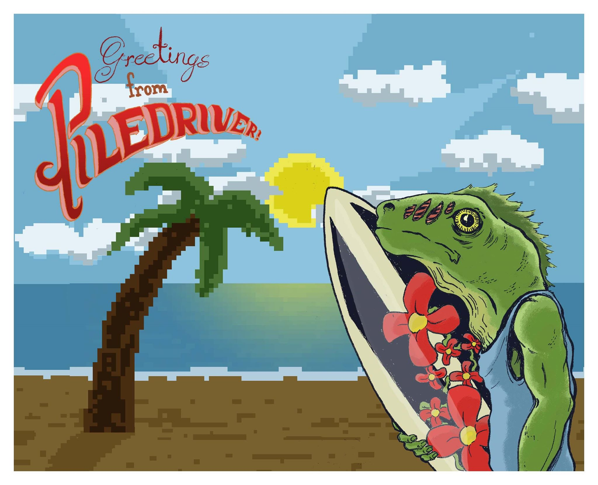
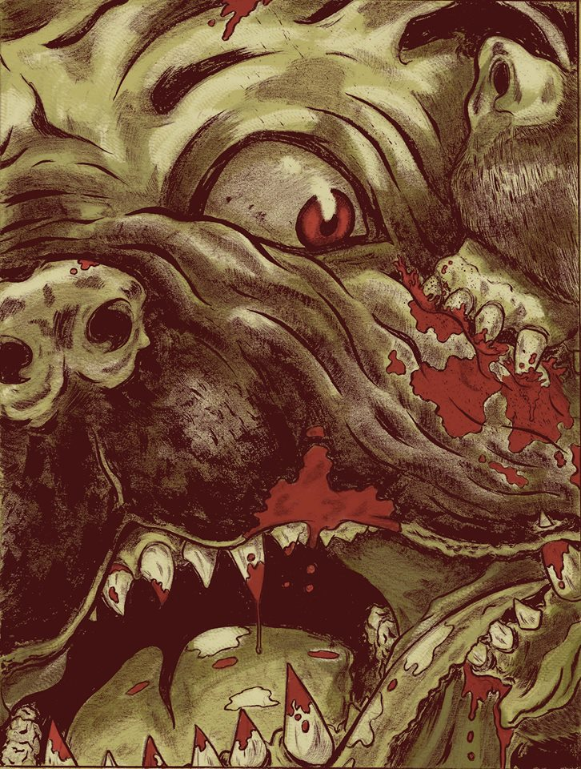
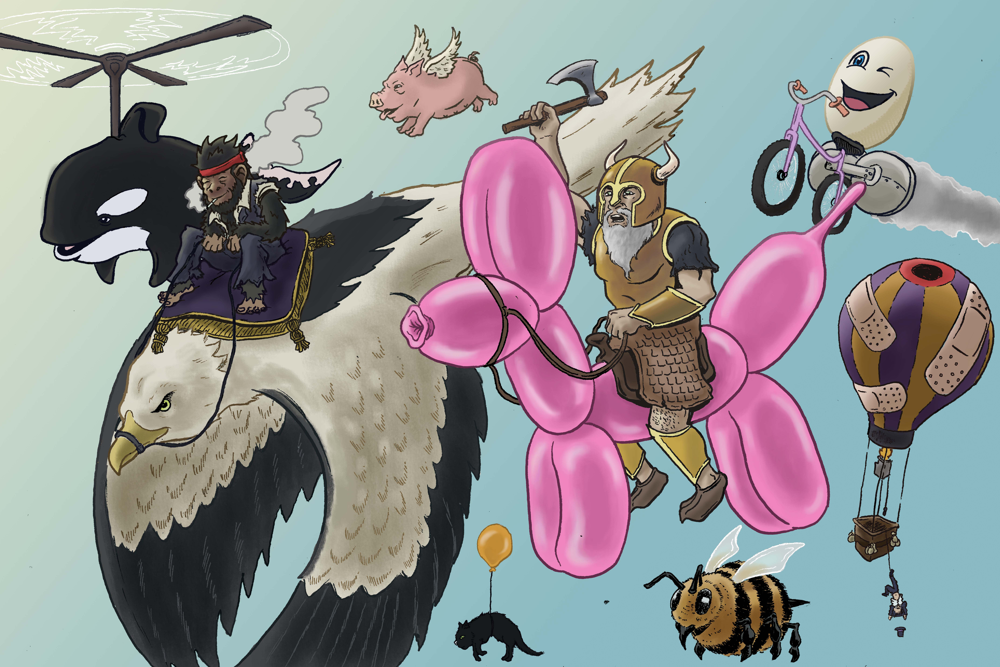

Lance Coleman: NSFW

Welcome to the Machine
My Name is Lance I make comics and shit.
I have a website that's full of a bunch of
my fucking comics. They are weird as hell.
Piledriver Comix
My dream was to try making a living off of comics,
but i guess you can't do that shit anymore so here we are.

Beyond Thunderdome
I went to college for fucking art, and I guess none of the teachers
felt obligated to tell us how little money was involved in the process.
I guess it probably should've occurred to me that if making money were
so easy for an artist, none of these people would've had to start teaching
to make ends meet. But you know I was a damn teenager, I didn't know any better.

Return to Fuck Mountain
So I figured out that the gallery scene wasn't for me pretty quickly.
but at that point I had fallen in love with comic books and thought
I'd just try my hardest to make a living off the thing that I love most.
The first roadblock was just getting people to read the stuff I had made.
I had my damn website for over a year, I think during that time maybe about
15 people had read any of it, including my fuckin' Mom. I was just on the
verge of quitting forever when I finally decided to post some of my shit on reddit
and it blew the fuck up. I got about 57,000 hits in one day. So, I had my
audience, time to make some money right? WRONG!

Return to Fuck Mountain 2: The Enfuckening
Turns out there is very little money to be made. Even for the most famous and
and successful comic creators in the world, its mainly a side gig. There is the
odd success story. But its kind of like trying to be Justin Bieber or that Zayn
kid. And most of those who "support" themselves with comics are actually trust
fund babies with free housing. So I guess I'm pretty much screwed unless I murder
my parents for insurance or something, but I don't think they're gonna leave me that much anyway
I think the most annoying part is that I'm actually really damn good at this.